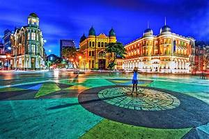
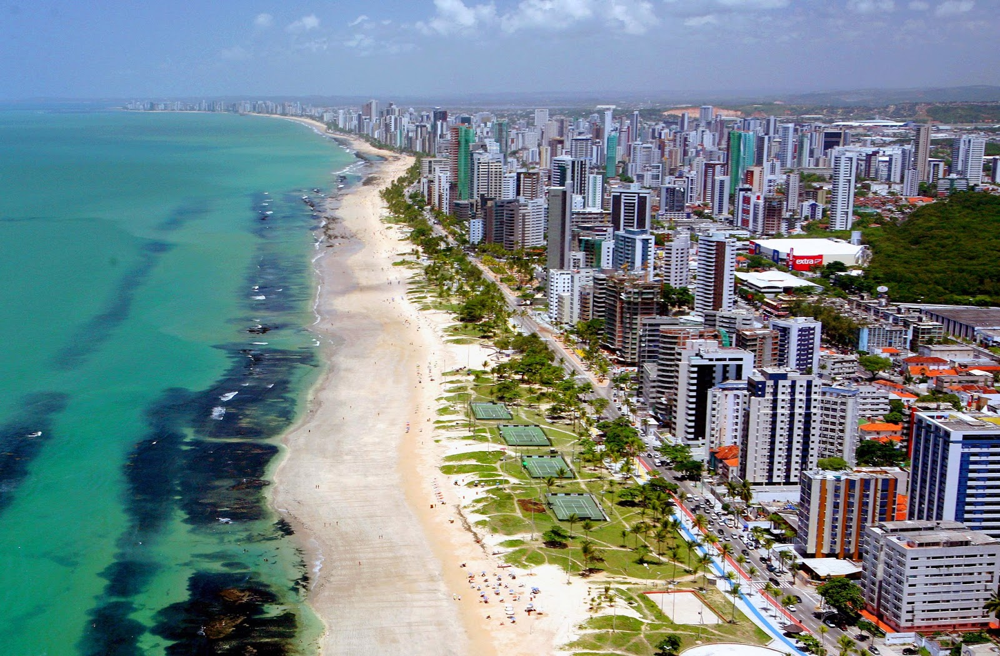

Recife Antigo

Recife Antigo é o centro histórico de Recife, conhecido por sua arquitetura colonial, igrejas históricas e o marco de fundação da cidade. É um lugar vibrante que abriga o Marco Zero, o Centro Cultural Judaico e diversas atrações culturais.
Praia de Boa Viagem

A Praia de Boa Viagem é a praia urbana mais famosa de Recife, com suas águas mornas e claras, uma vasta faixa de areia e uma excelente infraestrutura para turistas. É ideal para relaxar, nadar e aproveitar a culinária local nos quiosques da orla.
Instituto Ricardo Brennand

O Instituto Ricardo Brennand é um complexo cultural que inclui um museu, uma galeria de arte e um centro de pesquisa. O acervo abrange desde obras de arte do Renascimento até exposições sobre a história do Brasil, tudo em um ambiente de um castelo medieval.
Galo da Madrugada

O Galo da Madrugada é o maior bloco de carnaval do mundo, atraindo milhares de foliões para as ruas de Recife. A festa acontece na madrugada do sábado de carnaval e é conhecida por sua energia contagiante e por celebrar a cultura popular pernambucana.